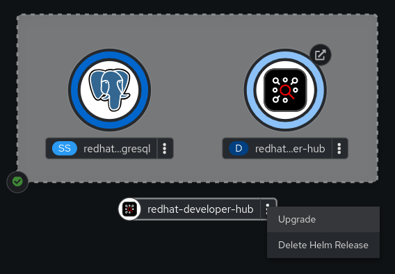
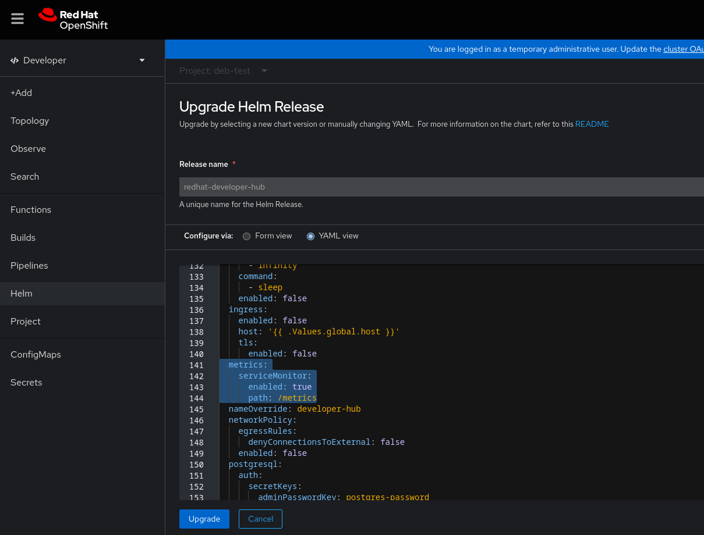

Monitoring and logging
Tracking performance and capturing insights with monitoring and logging tools in Red Hat Developer Hub
Abstract
Monitor performance and gather insights from Developer Hub by configuring log levels, enabling metrics on OpenShift Container Platform, and integrating with cloud monitoring services on AWS and AKS.
1. Log levels
Control the amount and type of information that Developer Hub writes to its logs by configuring the LOG_LEVEL environment variable using the Operator or Helm chart.
1.1. Configure the log level with the Red Hat Developer Hub Operator
Configure the application log level through the LOG_LEVEL environment variable by using the Red Hat Developer Hub Operator to control the minimum severity level of events that your application logs.
Prerequisites
- You have access to the Backstage custom resource (CR) used to deploy the application.
Procedure
Include the environment variable
LOG_LEVELin your Backstage CR. For example:spec: # Other fields omitted application: extraEnvs: envs: - name: LOG_LEVEL value: debugYou can use any of the values in the following table.
Table 1.
LOG_LEVELvalues in order of increasing severityValue Description debugDetailed information, typically useful only when troubleshooting.
infoGeneral information about the operation of the application. This is the default level.
warnPotential issues or situations that might require attention.
errorErrors that occurred during the operation but are not critical.
criticalUnrecoverable errors that must be addressed immediately to restore functionality.
1.2. Configure the log level with the Red Hat Developer Hub Helm chart
Configure the application log level through the LOG_LEVEL environment variable by using the Red Hat Developer Hub Helm chart to control the minimum severity level of events that your application logs.
Prerequisites
- You have installed Red Hat Developer Hub on OpenShift Container Platform using the Helm chart.
Procedure
Add
LOG_LEVELto your Helm chartvalues.yamlfile. For example:upstream: backstage: # --- Truncated --- extraEnvVars: - name: LOG_LEVEL value: debugYou can use any of the values in the following table.
Table 2.
LOG_LEVELvalues in order of increasing severityValue Description debugDetailed information, typically useful only when troubleshooting.
infoGeneral information about the operation of the application. This is the default level.
warnPotential issues or situations that might require attention.
errorErrors that occurred during the operation but are not critical.
criticalUnrecoverable errors that must be addressed immediately to restore functionality.
2. Enable observability for Red Hat Developer Hub on OpenShift Container Platform
Enable metrics monitoring for Developer Hub on OpenShift Container Platform by creating a ServiceMonitor custom resource (CR) to scrape metrics from the /metrics service endpoint.
2.1. Enable metrics monitoring in a Red Hat Developer Hub Operator installation on an OpenShift Container Platform cluster
Enable and view metrics for an Operator-installed Red Hat Developer Hub instance from the OpenShift Container Platform web console by setting the spec.monitoring.enabled field in your custom resource (CR).
Prerequisites
- Your OpenShift Container Platform cluster has monitoring for user-defined projects enabled.
- You have installed Red Hat Developer Hub on OpenShift Container Platform using the Red Hat Developer Hub Operator.
-
You have installed the OpenShift CLI (
oc).
Procedure
Use the OpenShift CLI (
oc) to edit your existing Red Hat Developer Hub CR.$ oc edit Backstage <instance_name>
In the CR, locate the
specfield and add themonitoringconfiguration block.spec: monitoring: enabled: trueSave the RHDH CR. The RHDH Operator detects the configuration and automatically creates the corresponding
ServiceMonitorcustom resource (CR).NoteThe Operator automatically configures the
ServiceMonitorwith the correct labels (app.kubernetes.io/instanceandapp.kubernetes.io/name) that match your Backstage CR. TheServiceMonitorwill be namedmetrics-<cr_name>. No additional label configuration is required.
Verification
- From the OpenShift Container Platform web console, select the Observe view.
- Click the Metrics tab to view metrics for Red Hat Developer Hub pods.
-
From the OpenShift Container Platform web console, click Project > Services and verify the labels for
backstage-developer-hub.
2.2. Enable metrics monitoring in a Helm chart installation on an OpenShift Container Platform cluster
Enable and view metrics for a Red Hat Developer Hub Helm deployment from the OpenShift Container Platform web console by configuring metrics monitoring during a chart upgrade.
Prerequisites
- Your OpenShift Container Platform cluster has monitoring for user-defined projects enabled.
- You have installed Red Hat Developer Hub on OpenShift Container Platform using the Helm chart.
Procedure
- From the OpenShift Container Platform web console, select the Topology view.
Click the overflow menu of the Red Hat Developer Hub Helm chart, and select Upgrade.

On the Upgrade Helm Release page, select the YAML view option in Configure via, then configure the
metricssection in the YAML, as shown in the following example:upstream: # ... metrics: serviceMonitor: enabled: true path: /metrics port: http-metrics # ...
- Click Upgrade.
Verification
- From the OpenShift Container Platform web console, select the Observe view.
- Click the Metrics tab to view metrics for Red Hat Developer Hub pods.
Additional resources
3. Monitoring and logging Red Hat Developer Hub on Amazon Web Services (AWS)
Configure Developer Hub to use Amazon Prometheus for metrics monitoring and Amazon CloudWatch for logging when hosting on Amazon Web Services (AWS) infrastructure.
3.1. Monitor with Amazon Prometheus
Configure Developer Hub to use Amazon Prometheus for metrics monitoring by setting the required pod annotations.
3.1.1. Configure annotations for monitoring with Amazon Prometheus by using the Red Hat Developer Hub Operator
Configure the required pod annotations by using the Red Hat Developer Hub Operator to enable monitoring with Amazon Prometheus.
Prerequisites
- You have configured Prometheus for your Elastic Kubernetes Service (EKS) clusters.
- You have created an Amazon managed service for the Prometheus workspace.
- You have configured Prometheus to import the Developer Hub metrics.
- You have ingested Prometheus metrics into the created workspace.
Procedure
As an administrator of the Red Hat Developer Hub Operator, edit the default configuration to add Prometheus annotations as follows:
# Update OPERATOR_NS accordingly $ OPERATOR_NS=rhdh-operator $ kubectl edit configmap backstage-default-config -n "${OPERATOR_NS}"Find the
deployment.yamlkey in the config map and add the annotations to thespec.template.metadata.annotationsfield as follows:deployment.yaml: |- apiVersion: apps/v1 kind: Deployment # --- truncated --- spec: template: # --- truncated --- metadata: labels: rhdh.redhat.com/app: # placeholder for 'backstage-<cr_name>' # --- truncated --- annotations: prometheus.io/scrape: 'true' prometheus.io/path: '/metrics' prometheus.io/port: '9464' prometheus.io/scheme: 'http' # --- truncated ---- Save your changes.
Verification
To verify if the scraping works:
Use
kubectlto port-forward the Prometheus console to your local machine as follows:$ kubectl --namespace=prometheus port-forward deploy/prometheus-server 9090
-
Open your web browser and navigate to
http://localhost:9090to access the Prometheus console. -
Monitor relevant metrics, such as
process_cpu_user_seconds_total.
3.1.2. Configure annotations for monitoring with Amazon Prometheus by using the Red Hat Developer Hub Helm chart
Configure the required pod annotations by using the Red Hat Developer Hub Helm chart to enable monitoring with Amazon Prometheus.
Prerequisites
- You have configured Prometheus for your Elastic Kubernetes Service (EKS) clusters.
- You have created an Amazon managed service for the Prometheus workspace.
- You have configured Prometheus to import the Developer Hub metrics.
- You have ingested Prometheus metrics into the created workspace.
Procedure
To annotate the backstage pod for monitoring, update your
values.yamlfile as follows:upstream: backstage: # --- TRUNCATED --- podAnnotations: prometheus.io/scrape: 'true' prometheus.io/path: '/metrics' prometheus.io/port: '9464' prometheus.io/scheme: 'http'
Verification
To verify if the scraping works:
Use
kubectlto port-forward the Prometheus console to your local machine as follows:$ kubectl --namespace=prometheus port-forward deploy/prometheus-server 9090
-
Open your web browser and navigate to
http://localhost:9090to access the Prometheus console. -
Monitor relevant metrics, such as
process_cpu_user_seconds_total.
3.2. Log with Amazon CloudWatch
Retrieve and query Developer Hub logs by using Amazon CloudWatch Container Insights and the WinstonJS logging library.
3.2.1. Retrieve logs from Amazon CloudWatch
Retrieve and query logs from your Developer Hub instance by using Amazon CloudWatch Container Insights and Logs Insights.
Prerequisites
- CloudWatch Container Insights is used to capture logs and metrics for Amazon Elastic Kubernetes Service. For more information, see Logging for Amazon Elastic Kubernetes Service documentation.
- To capture the logs and metrics, install the Amazon CloudWatch Observability EKS add-on in your cluster. Following the setup of Container Insights, you can access container logs using Logs Insights or Live Tail views.
CloudWatch names the log group where all container logs are consolidated in the following manner:
/aws/containerinsights/<cluster_name>/application
Procedure
To retrieve logs from the Developer Hub instance, run a query such as:
fields @timestamp, @message, kubernetes.container_name | filter kubernetes.container_name in ["install-dynamic-plugins", "backstage-backend"]
4. Monitor and log with Azure Kubernetes Service (AKS) in Red Hat Developer Hub
Monitor resource utilization, diagnose issues, and collect logs for Developer Hub on Azure Kubernetes Service (AKS) by using Managed Prometheus Monitoring and Azure Monitor.
4.1. Enable Azure Monitor metrics
Enable managed Prometheus monitoring for your Azure Kubernetes Service (AKS) cluster to collect metrics and monitor Developer Hub performance through Azure Monitor.
Prerequisites
- You have an AKS cluster.
- You have the Azure CLI installed.
Procedure
To enable managed Prometheus monitoring, use the
--enable-azure-monitor-metricsoption with either theaz aks createoraz aks updatecommand:$ az aks create/update --resource-group <your_resource_group> --name <your_cluster> --enable-azure-monitor-metrics
This command installs the metrics add-on, which gathers Prometheus metrics.
Verification
- In the Azure portal, navigate to Monitoring → Insights to view the monitoring results. For more information, see Monitor Azure resources with Azure Monitor.
4.2. Configure annotations for AKS monitoring by using the Operator
Configure the pod annotations for monitoring Developer Hub specific metrics on Azure Kubernetes Service (AKS) by using the Red Hat Developer Hub Operator.
Procedure
As an administrator of the Operator, edit the default configuration to add Prometheus annotations:
# Update OPERATOR_NS accordingly OPERATOR_NS=rhdh-operator $ kubectl edit configmap backstage-default-config -n "${OPERATOR_NS}"Find the
deployment.yamlkey in the ConfigMap and add the annotations to thespec.template.metadata.annotationsfield:deployment.yaml: |- apiVersion: apps/v1 kind: Deployment # --- truncated --- spec: template: # --- truncated --- metadata: labels: rhdh.redhat.com/app: # placeholder for 'backstage-<cr_name>' # --- truncated --- annotations: prometheus.io/scrape: 'true' prometheus.io/path: '/metrics' prometheus.io/port: '9464' prometheus.io/scheme: 'http' # --- truncated ---- Save your changes.
Verification
- Navigate to the corresponding Azure Monitor Workspace and view the metrics under Monitoring → Metrics.
4.3. Configure annotations for AKS monitoring by using the Helm chart
Configure the pod annotations for monitoring Developer Hub specific metrics on Azure Kubernetes Service (AKS) by using the Helm chart.
Procedure
Update your
values.yamlfile to annotate the backstage pod for monitoring:upstream: backstage: # --- TRUNCATED --- podAnnotations: prometheus.io/scrape: 'true' prometheus.io/path: '/metrics' prometheus.io/port: '9464' prometheus.io/scheme: 'http'
Verification
- Navigate to the corresponding Azure Monitor Workspace and view the metrics under Monitoring → Metrics.
4.4. View live logs with Azure Kubernetes Service (AKS)
Access live data logs generated by Kubernetes objects for your Developer Hub instance on AKS.
Prerequisites
- You have deployed Developer Hub on AKS.
For more information, see Installing Red Hat Developer Hub on Microsoft Azure Kubernetes Service.
Procedure
- Navigate to the Azure Portal.
-
Search for the resource group
<your_resource_group>and locate your AKS cluster<your_cluster>. - Select Kubernetes resources → Workloads from the menu.
-
Select the
<your_rhdh_cr>-developer-hub(in case of Helm Chart installation) or<your_rhdh_cr>-backstage(in case of Operator-backed installation) deployment. - Click Live Logs in the left menu.
Select the pod.
NoteThere must be only single pod.
Verification
- Live log data is collected and displayed.
4.5. View real-time log data with Azure Kubernetes Service (AKS)
View real-time log data from the Container Engine for your Developer Hub instance on AKS.
Prerequisites
- You have deployed Developer Hub on AKS.
For more information, see Installing Red Hat Developer Hub on Microsoft Azure Kubernetes Service.
Procedure
- Navigate to the Azure Portal.
-
Search for the resource group
<your_resource_group>and locate your AKS cluster<your_cluster>. - Select Monitoring → Insights from the menu.
- Go to the Containers tab.
- Find the backend-backstage container and click it to view real-time log data as it is generated by the Container Engine.